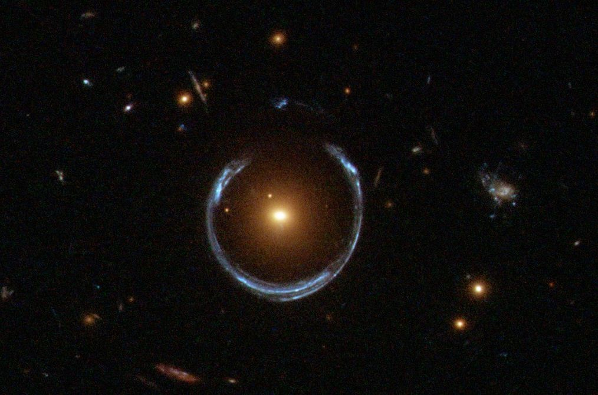
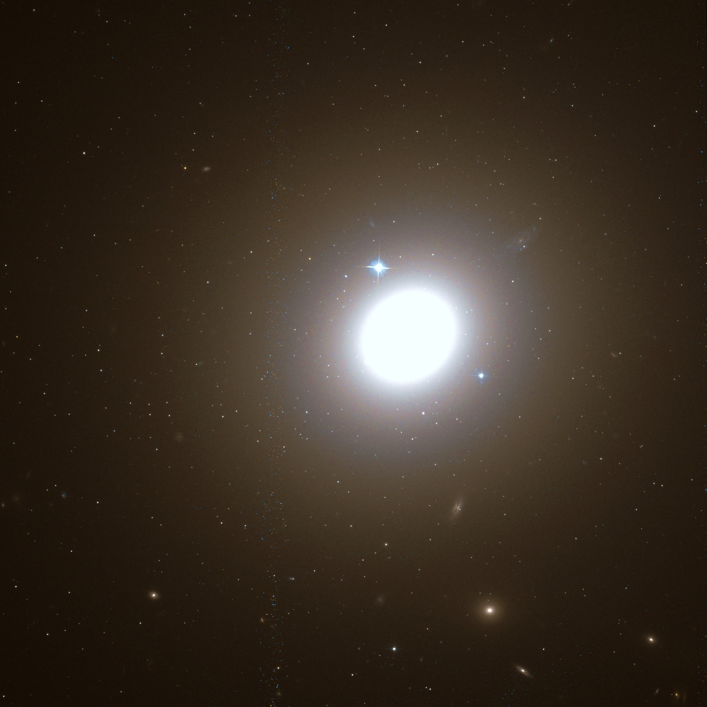
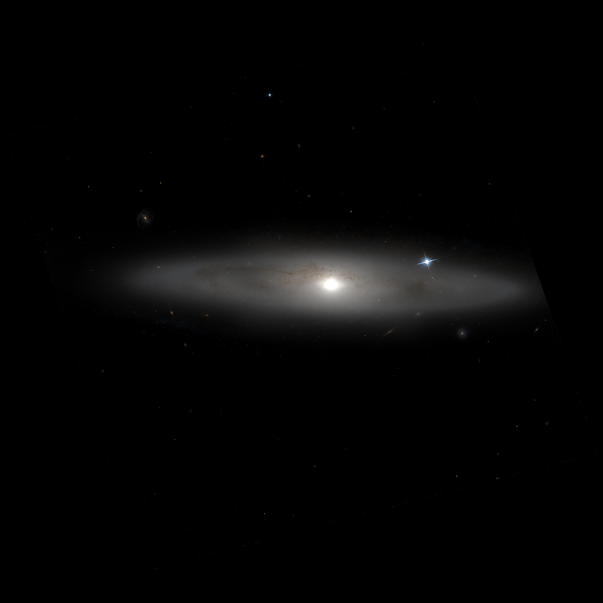

L'histoire des galaxies commenca dans les années 1600, lorsque Galilée utilisa une lunette afin d'étudier notre Voie Lactée, et vit un grand nombre d'étoiles. Dans les années 1750, Emmanuel Kant (photo de droite) suggéra alors que notre galaxie était en rotation sur elle-même et était composée de "nébuleuses" qui réprésentaient les étoiles vues par Galilée.
Au cours du XVIII e siècle, plus de 5000 nébuleuses ont été découvertes par des scientifiques. Au cours du XIX e siècle, on a pu distinguer
les nébuleuses elliptiques et les nébuleuses spirales, que l'on détaillera plus tard.
A cette époque, de nombreux débats avaient lieu et deux partis s'opposaient : ceux qui pensaient que les nébuleuses étaient dans notre galaxie
et ceux qui pensaient qu'elles se situaient au-delà de notre galaxie.
Ce n'est que le 30 décembre 1924 qu'Edwin Hubble (photo de droite), aidé par son nouveau téléscope, annonça que les nébuleuses étaient bien situées au-delà de notre galaxie. Cette révélation a mis en évidence la présence d'autres galaxies situées en dehors de la Voie Lactée.
Les galaxies sont composées d'éléments qui les caractérisent, et que l'on peut étudier grâce à un spectre .
A partir de l'analyse des spectres, on peut retrouver diverses informations telles que l'âge des étoiles, la composition des gaz et la quantité de poussière présente.
Comme nous l'avions dit auparavant, au cours du XIX e siècle, on a pu distinguer les galaxies elliptiques et les galaxies spirales mais il y en a bien d'autres encore ! Voici cinq grands types de galaxies.
Les galaxies à anneau sont caractérisées par un noyau et un anneau constitué d'étoiles bleues brillantes.
Les galaxies elliptiques sont caractérisées par une forme ovale. Elles sont une brillance quasi uniforme. Ces galaxies ne possèdent pas de bras spiraux (qui correpondent aux traits formés par la galaxie).
Les galaxies spirales sont caractérisées par une forme aplatie représentant un disque. On peut également y distinguer un centre plus lumineux, appelé le bulbe. Cette classe se subdivise en deux sous groupes :
Les galaxies lenticulaires sont entre les galaxies elliptiques et les galaxies spirales. Comme les galaxies elliptiques, elles ne possèdent pas de bras spriraux mais, tout comme les galaxies sprirales, elles possèdent un disque et un noyau.
 Les galaxies irrégulières correspondent aux galaxies qui ne sont ni à anneaux, ni spirales, ni elliptiques, ni lenticulaires.
On en distingue deux types :
L'univers est composé de milliards de galaxies , dont voici quelques exemples.
LRG 3-757 est une galaxie découverte en 1950. Elle est un exemple de galaxie à anneau. Nous voyons bien la présence d'un noyau et d'un anneau constitué d'étoiles bleues brillantes.
NGC 1427 est une galaxie découverte en 1837, située dans la constellation de Fourneau, constellation très peu lumineuse. Il s'agit d'une galaxie elliptique. Nous voyons bien la forme ovale de la galaxie et sa brillance uniforme. Elle est située à environ 63 millions d'AL (années lumières), ce qui signifie que, en voyageant à la vitesse de la lumière, il nous faudrait 63 millions d'années pour atteindre cette galaxie. Sa vitesse de propagation est près de 1 400 km/s.
M58 est une galaxie qui a été découverte en 1779. Elle est située dans la constellation de la Vierge. C'est une galaxie spirale barrée. Nous voyons bien la présence d'un noyau qui s'étire et d'une forme aplatie représentant un disque. C'est l'une des galaxies les plus brillante de l'amas (qui est l'association de centaines de galaxies) de la Vierge. Cette galaxie est située à environ 60 millions d'AL de la Voie Lactée.
NGC 59 est une galaxie est présente dans la constellation de la Baleine. Il s'agit d'une galaxie lenticulaire, nous pouvons voir qu'elle ne possède pas de bras spiraux mais un disque et un noyau. Elle est située à plus de 16 millions d'AL de la Voie Lactée. Sa vitesse radiale est impressionnante car elle s'approche des 362 km/s.
NGC 6240 est une galaxie située dans la constellation d'Ophiuchus. Il s'agit d'une galaxie irrégulière, nous pouvons voir qu'elle ne correspond à aucune galaxie à anneaux, spirales, elliptiques et lenticulaires. Cette galaxie a été formée à partir de la collision entre deux autres galaxies plus petites. Elle est donc composée de deux noyaux. Elle est l'une des rares galaxies à être extrêmement lumineuse dans le domaine des infrarouges. On dit qu'elle fait partie des ULIRG (Ultra-Luminous Infra-Red Galaxy).